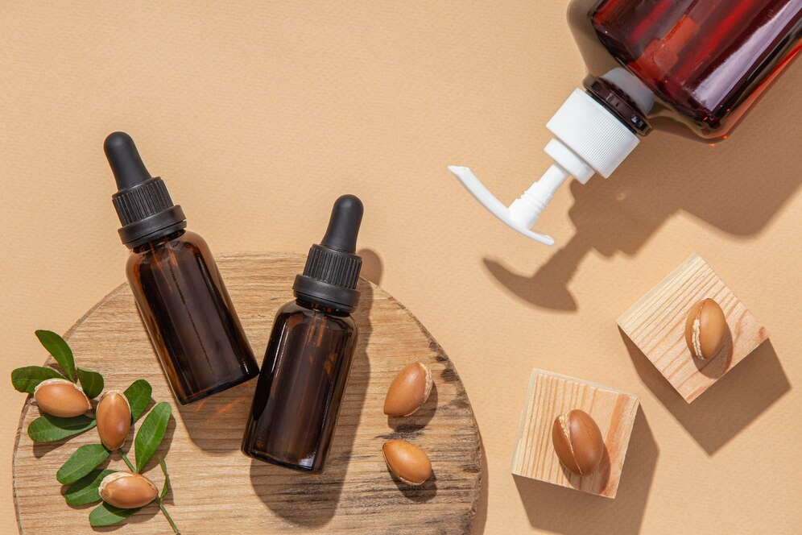
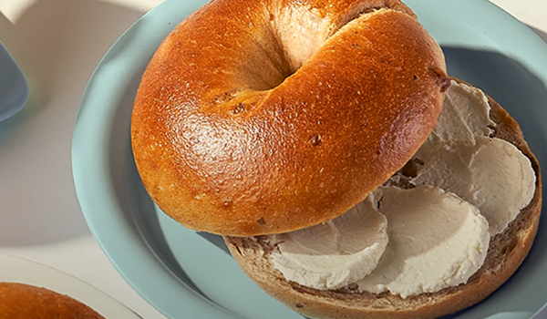
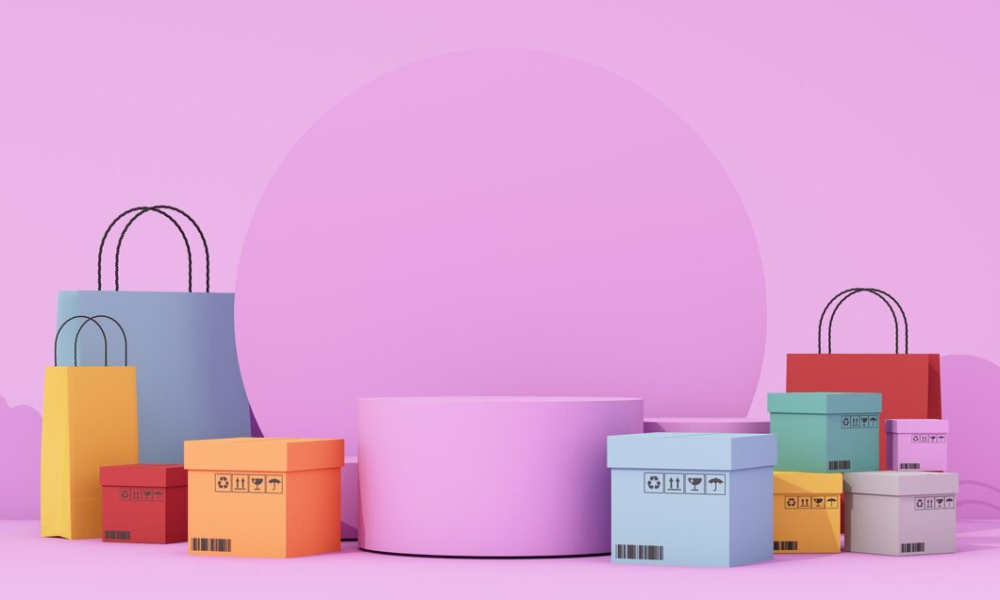

view more
Hook을 활용한 Tailwind CSS 적용 방법PUBLISHER Kang Young Ji
Portfolio @2025
-
gowoonsesang / #JS #GSAP #SWIPER #SCROLLTRIGGER
-
O'Kitchen / #JS #PWA #SWIPER #MAP
-
Designdigit / #JS #GSAP #SWIPER
- DesignPower / #JS #GSAP #SWIPER #ScrollTrigger